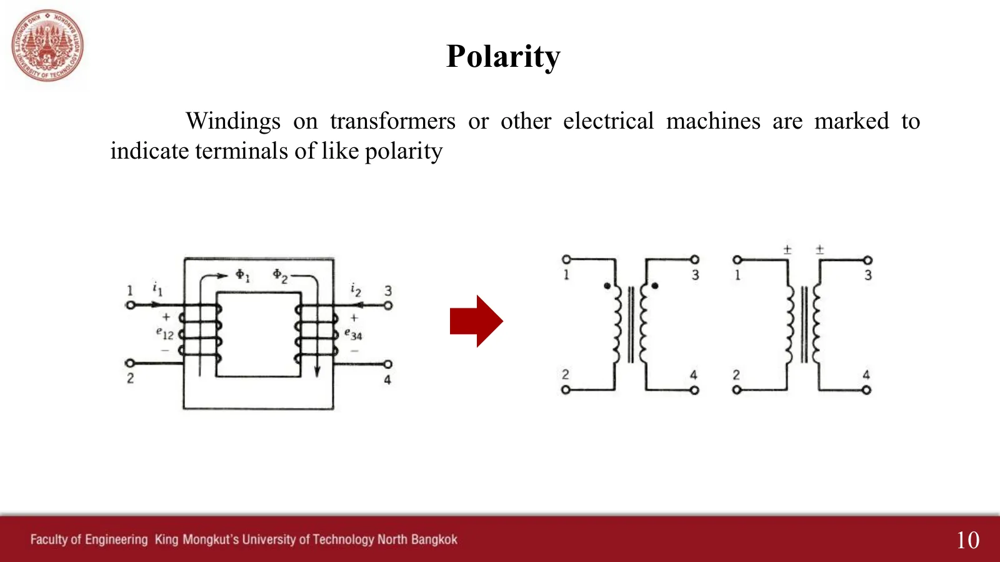
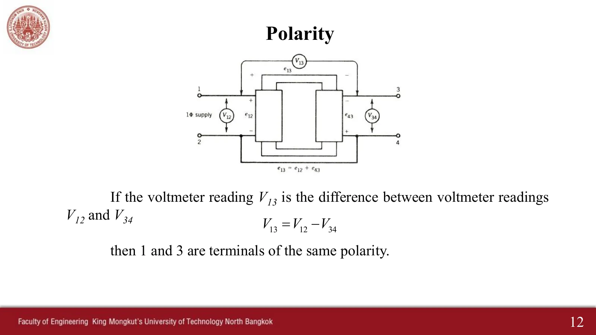
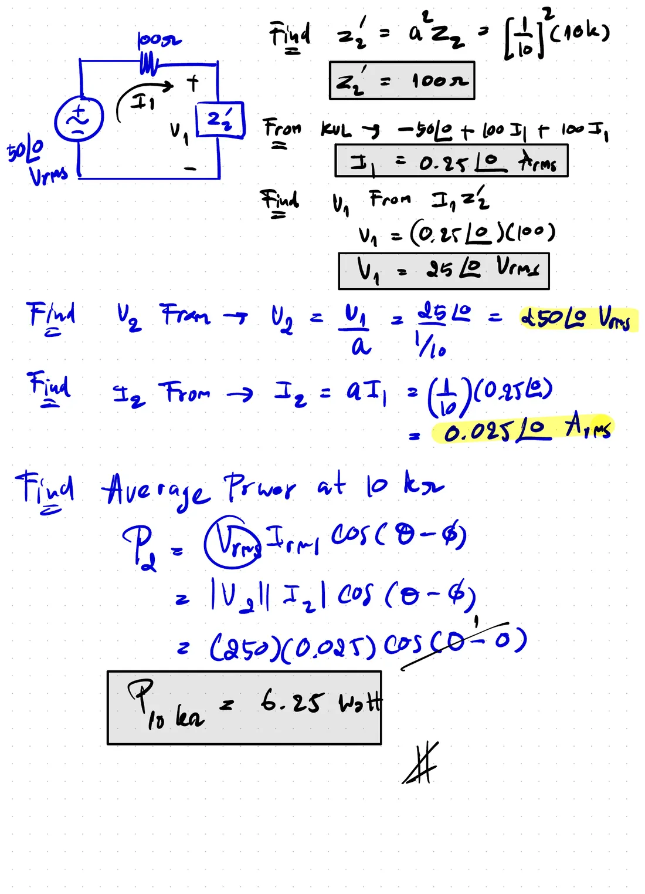

ขั้วของหม้อแปลง การต่อขนาน และประสิทธิภาพ The dots on a transformer, and what they decide
Transformer polarity, parallel connection and efficiency The dots on a transformer, and what they decide
ขดลวดของหม้อแปลงมีเครื่องหมายบอกขั้วที่มีขั้วเดียวกัน (like polarity) ปกติเป็นจุด (สไลด์หม้อแปลงหน้า 10) ขณะที่ขั้วที่มีจุดของขดลวดหนึ่งเป็นบวก ขั้วที่มีจุดของอีกขดลวดก็เป็นบวกด้วย จุดจึงบอกเครื่องหมายของแรงดันและกระแสด้านทุติยภูมิ หน้านี้มีการทดสอบขั้วด้วยโวลต์มิเตอร์ที่อ่านได้ 110 V หรือ 90 V (ส่วน A) Ex 2 สไลด์หน้า 15 ซึ่งจุดด้านทุติยภูมิอยู่ล่างจนแรงดันกลับเครื่องหมาย (ข้อ 1) หม้อแปลงสองตัวต่อขนานที่ต้องต่อให้ถูกขั้ว (ส่วน B) และประสิทธิภาพของหม้อแปลงจริงที่มีการสูญเสียในแกนและในทองแดง (ส่วน C) ค่าทุกตัวเป็นค่ายังผล
Transformer windings carry marks for the terminals of like polarity, usually dots (transformer slide p. 10): whenever the dotted terminal of one winding is positive, the dotted terminal of the other is positive too, so the dots set the signs of the secondary voltage and current. This page has the polarity test, where a voltmeter reads 110 V or 90 V (section A), Ex 2 of slide p. 15, whose secondary dot is at the bottom so the voltage changes sign (problem 1), two transformers in parallel, which must be connected with the right polarity (section B), and the efficiency of a real transformer with core and copper losses (section C). All values are rms.
ประเด็นสำคัญของหน้านี้
- จุดบอกขั้วเดียวกัน (สไลด์หน้า 10): แรงดันที่วัดจากขั้วมีจุดไปขั้วไม่มีจุดของทั้งสองขดลวดเฟสเดียวกัน ถ้ากำหนดเครื่องหมาย + ของ \(V_2\) ไว้ที่ขั้วไม่มีจุด ต้องใส่เครื่องหมายลบ: \(\mathbf{V}_2 = -\mathbf{V}_1/a\) (ข้อ 1)
- ทดสอบขั้ว (สไลด์หน้า 11–12): ต่อขั้ว 2 กับ 4 แล้ววัด \(V_{13}\) ถ้าได้ผลต่าง \(V_{12} - V_{34}\) ขั้ว 1 กับ 3 มีขั้วเดียวกัน ถ้าได้ผลบวก \(V_{12} + V_{34}\) ขั้ว 1 กับ 4 มีขั้วเดียวกัน (ส่วน A)
- ต่อขนาน (สไลด์หน้า 13): แรงดันด้านทุติยภูมิของสองตัวต้องหักล้างกันภายในวงของสองขดลวด ถ้าต่อกลับขั้ว แรงดันจะเสริมกันและมีแต่ความต้านทานของขดลวดซึ่งต่ำมากจำกัดกระแส กระแสไหลวนจึงสูงมากจนหม้อแปลงเสียหาย (ส่วน B)
- ประสิทธิภาพ (สไลด์หน้า 14): \(\eta = P_{out}/(P_{out} + P_c + P_{cu})\) การสูญเสียในแกน \(P_c\) คงที่ ส่วนการสูญเสียในทองแดง \(P_{cu} = I_2^2R_{eq2}\) แปรตามกำลังสองของโหลด ประสิทธิภาพสูงสุดเมื่อ \(P_{cu} = P_c\) (ส่วน C)
Key points of this page
- Dots mark like polarity (slide p. 10): the voltages measured from the dotted to the undotted terminal of the two windings are in phase. If \(V_2\) is marked + at the undotted terminal, a minus sign appears: \(\mathbf{V}_2 = -\mathbf{V}_1/a\) (problem 1).
- Polarity test (slides pp. 11–12): join terminals 2 and 4 and measure \(V_{13}\). The difference \(V_{12} - V_{34}\) means 1 and 3 have like polarity; the sum \(V_{12} + V_{34}\) means 1 and 4 do (section A).
- Parallel connection (slide p. 13): the two secondary voltages must oppose each other around the loop of the two windings. Connected the wrong way they add, and only the very small winding resistances limit the current, so a huge circulating current flows and damages the transformers (section B).
- Efficiency (slide p. 14): \(\eta = P_{out}/(P_{out} + P_c + P_{cu})\). The core loss \(P_c\) is constant, while the copper loss \(P_{cu} = I_2^2R_{eq2}\) follows the square of the load; the efficiency is highest when \(P_{cu} = P_c\) (section C).
ทดสอบขั้วด้วยโวลต์มิเตอร์สามตัว: 110 V หรือ 90 V
The polarity test with three voltmeters: 110 V or 90 V



ดูสไลด์หน้า 11–12 ที่ผู้สอนเขียนในห้อง (ปี 2568)See slides pp. 11–12 as written in class (2025)
ไฟเฟสเดียว 100 V ต่อขั้ว 1–2 ของหม้อแปลง 10 : 1 ขั้ว 2 ต่อกับขั้ว 4 แล้วโวลต์มิเตอร์สามตัวอ่าน \(V_{12}\), \(V_{34}\) และ \(V_{13}\) เพราะขั้ว 2 กับ 4 เป็นจุดเดียวกัน \(\mathbf{V}_{13} = \mathbf{V}_{12} + \mathbf{V}_{43} = \mathbf{V}_{12} - \mathbf{V}_{34}\) แผงข้างภาพต่อเฟเซอร์แบบหัวต่อหาง สลับตำแหน่งจุดของขดลวดที่สอง: ถ้าจุดอยู่ที่ขั้ว 3 \(\mathbf{V}_{34}\) เฟสเดียวกับ \(\mathbf{V}_{12}\) จึงหักออกได้ 90 V ถ้าจุดอยู่ที่ขั้ว 4 \(\mathbf{V}_{34}\) กลับเฟส จึงบวกเข้าได้ 110 V
A single-phase 100 V supply feeds terminals 1–2 of a 10 : 1 transformer, terminal 2 is joined to terminal 4, and three voltmeters read \(V_{12}\), \(V_{34}\) and \(V_{13}\). Since terminals 2 and 4 are one point, \(\mathbf{V}_{13} = \mathbf{V}_{12} + \mathbf{V}_{43} = \mathbf{V}_{12} - \mathbf{V}_{34}\); the side panel adds the phasors head to tail. Move the dot of the second winding: with the dot at terminal 3, \(\mathbf{V}_{34}\) is in phase with \(\mathbf{V}_{12}\) and is taken away, giving 90 V; with the dot at terminal 4, \(\mathbf{V}_{34}\) is reversed and adds, giving 110 V.
Ex 2: หาแรงดัน V₁, V₂ กระแส I₁, I₂ และกำลังเฉลี่ยในตัวต้านทาน 10 kΩ
Ex 2: find the voltages V₁, V₂, the currents I₁, I₂ and the average power in the 10 kΩ resistor

แหล่งจ่าย 50 V มีความต้านทาน 100 Ω ต่อด้านปฐมภูมิของหม้อแปลง 1 : 10 ด้านทุติยภูมิต่อ 10 kΩ ขนาดของทุกค่าหาได้ด้วยการโอนอิมพีแดนซ์ของหน้า 10.4 แต่เครื่องหมายต้องดูจุด: \(V_2\) กำหนด + ไว้ด้านบน แต่จุดด้านทุติยภูมิอยู่ด้านล่าง ภาพจำลองแสดงจุดตามสไลด์ แผงข้างภาพและกราฟแสดงว่า \(v_2\) กลับเฟสกับ \(v_1\) ลองตอบก่อน (ใส่ขนาดและมุมของ \(V_2\))
A 50 V source with 100 Ω feeds the primary of a 1 : 10 transformer whose secondary feeds 10 kΩ. Every size follows from the impedance transfer of page 10.4, but the signs come from the dots: \(V_2\) is marked + at the top while the secondary dot is at the bottom. The simulation draws the dots as on the slide, and the side panel and the graph show \(v_2\) in opposite phase to \(v_1\). Try it first (enter the size and the angle of \(V_2\)).
ดูวิธีทำที่ผู้สอนเขียนในห้อง (ปี 2568 และ 2566)See the solutions written in class (2025 and 2023)

![Handwritten 2023 solution of the same problem: Vs = Vx + V1; a = N1/N2 = 1/10 = 0.1 and a = V1/V2 = I2/I1 = N1/N2; from the ideal transformer, Z1 = a²Z2 = (0.1)²(10 kΩ) = 100 Ω; considering the primary side, V1 by the voltage divider, V1 = [Z1/(Z1 + 100)]Vs = [100/(100 + 100)](50∠0) = 25∠0 Vrms; V2 = V1/a = 25∠0/0.1 = 250∠0 Vrms; I1 = V1/Z1 = 25∠0/100 = 0.25∠0 Arms; I2 = aI1 = (0.1)(0.25∠0) = 0.025∠0 Arms; P(10 kΩ) = |V2rms||I2rms|cos(θ − φ) = (250)(0.025)cos(0) = 6.25 watt](slides/ch10/tk09.webp)
หม้อแปลงสองตัวต่อขนาน: ถูกขั้วและผิดขั้ว
Two transformers in parallel: right and wrong polarity
![Transformer slide 13, Polarity: polarities of windings must be known if transformers are connected in parallel to share a common load. Figure a shows the parallel connection of two single-phase (1φ) transformers. This is the correct connection because secondary voltages e21 and e22 oppose each other internally. The connection shown in Figure b is wrong, because e21 and e22 aid each other (and a circulating current icir flows around the two secondaries). Figure a: two transformers fed from a 1φ supply with their secondaries in parallel feeding a load; figure b: the same with one secondary reversed and the circulating current drawn](slides/ch10/t13.webp)
ดูสไลด์หน้า 13 ที่ผู้สอนเขียนในห้อง (ปี 2568)See slide p. 13 as written in class (2025)
ไฟ 220 V จ่ายหม้อแปลง 2 : 1 สองตัวที่ต่อขนานกันจ่ายโหลด 10 Ω ขดลวดทุติยภูมิแต่ละชุดมีความต้านทาน r เพียงเล็กน้อย ต่อถูก: แรงดันด้านทุติยภูมิทั้งสอง (110 V) หักล้างกันในวงของสองขดลวด จึงไม่มีกระแสวน และแต่ละตัวจ่ายกระแสครึ่งหนึ่งของโหลด ต่อผิด: แรงดันเสริมกันเป็น 220 V รอบวงที่มีแต่ r + r จำกัด กระแสวนพุ่งเป็นหลายร้อยแอมแปร์ ขณะที่โหลดแทบไม่ได้อะไรเลย
A 220 V supply feeds two 2 : 1 transformers in parallel, which feed a 10 Ω load; each secondary has only a small resistance r. Connected right, the two secondary voltages (110 V) cancel around the loop of the two windings, so nothing circulates and each transformer supplies half the load current. Connected wrong, they add to 220 V around a loop limited only by r + r: the circulating current shoots to hundreds of amperes while the load gets almost nothing.
ประสิทธิภาพของหม้อแปลงจริง
The efficiency of a real transformer
![Transformer slide 14, Efficiency: equipment is desired to operate at a high efficiency. Fortunately, losses in transformers are small. Because the transformer is a static device, there are no rotational losses such as windage and friction losses in a rotating machine. In a well-designed transformer the efficiency can be as high as 99%. The efficiency is defined as η = output power (Pout)/input power (Pin). The losses in the transformer are the core loss (Pc) and copper loss (Pcu). Therefore η = Pout/(Pout + Pc + Pcu) = V2I2 cos θ2/(V2I2 cos θ2 + Pc + I2²Req2)](slides/ch10/t14.webp)
หม้อแปลงจริงขนาด 10 kVA การสูญเสียในแกน \(P_c\) (หน้า 10.3) ขึ้นกับแรงดันและความถี่ซึ่งคงที่ จึงคงที่ทุกโหลด ส่วนการสูญเสียในทองแดง \(P_{cu} = I_2^2R_{eq2}\) แปรตามกำลังสองของกระแส ถ้าโหลดเป็น x เท่าของพิกัด \(P_{cu} = x^2P_{cu,FL}\) (FL: full load, พิกัดเต็ม) เลื่อนโหลดแล้วดูว่าประสิทธิภาพสูงสุดเกิดที่จุดซึ่งเส้นสองเส้นในกราฟขวาตัดกัน คือ \(P_{cu} = P_c\)
A real 10 kVA transformer. Its core loss \(P_c\) (page 10.3) depends on the voltage and frequency, which are fixed, so it is the same at every load, while the copper loss \(P_{cu} = I_2^2R_{eq2}\) follows the square of the current: at x times the rating, \(P_{cu} = x^2P_{cu,FL}\) (FL: full load). Move the load and see that the efficiency peaks where the two lines of the right-hand graph cross, at \(P_{cu} = P_c\).
ฝึกเพิ่ม
More practice
ลองทำดู 1 — จุดขั้ว
- ส่วน A สลับจุดระหว่างขั้ว 3 กับ 4: โวลต์มิเตอร์ \(V_{13}\) เปลี่ยนระหว่าง 90 V กับ 110 V ส่วน \(V_{12}\) และ \(V_{34}\) เท่าเดิม
- ข้อ 1 ขั้นที่ 3: ในกราฟ \(v_2/10\) กลับเฟสกับ \(v_1\) ถ้าย้ายจุดด้านทุติยภูมิขึ้นไปด้านบน \(\mathbf{V}_2\) จะเป็น \(250\angle 0^\circ\) V ตามเฉลยในห้อง
- คำถาม: ในข้อ 1 ถ้ากลับทิศของ \(I_2\) ให้ทวนเข็มนาฬิกา \(\mathbf{I}_2\) เป็นเท่าใด และกำลังยังเป็น 6.25 W หรือไม่
ลองทำดู 2 — ต่อขนาน
- ส่วน B ต่อถูก: หม้อแปลงแต่ละตัวจ่าย 5.45 A รวม 10.89 A ให้โหลด ต่อผิด: 550 A วนในขดลวด และโหลดได้ศูนย์
- ลดความต้านทานขดลวด r ลงครึ่งหนึ่งในกรณีต่อผิด: กระแสวนเพิ่มเป็นสองเท่า หม้อแปลงที่ดี (r ต่ำ) ยิ่งต่อผิดยิ่งเสียหายมาก
- เทียบกับที่ผู้สอนเขียนในห้อง: 1 A + 1 A = 2 A เมื่อต่อถูก และ 100 A เมื่อต่อผิด
ลองทำดู 3 — ประสิทธิภาพ
- ส่วน C ตั้ง \(P_c = 100\) W, \(P_{cu,FL} = 300\) W: ประสิทธิภาพสูงสุดที่โหลด 57.7 % ของพิกัด ไม่ใช่ที่พิกัดเต็ม
- ลดตัวประกอบกำลังจาก 1 เป็น 0.6: กำลังออกลดลงแต่การสูญเสียเท่าเดิม ประสิทธิภาพจึงลดลง
- หม้อแปลงจำหน่ายที่เปิดตลอดวันแต่มีโหลดเต็มเพียงบางช่วง ควรออกแบบให้ \(P_c\) ต่ำ เพราะ \(P_c\) เสียตลอด 24 ชั่วโมง
Try this 1 — the dots
- In section A move the dot between terminals 3 and 4: the voltmeter \(V_{13}\) switches between 90 V and 110 V while \(V_{12}\) and \(V_{34}\) stay the same.
- Problem 1, step 3: in the graph \(v_2/10\) is in opposite phase to \(v_1\). With the secondary dot moved to the top, \(\mathbf{V}_2\) would be \(250\angle 0^\circ\) V, as in the class solutions.
- Question: in problem 1, if \(I_2\) were taken counter-clockwise, what would \(\mathbf{I}_2\) be, and would the power still be 6.25 W?
Try this 2 — parallel connection
- In section B, connected right, each transformer supplies 5.45 A, 10.89 A in all to the load; connected wrong, 550 A circulates in the windings and the load gets nothing.
- Halve the winding resistance r in the wrong connection: the circulating current doubles. The better the transformer (low r), the worse the damage when it is connected wrong.
- Compare with the instructor's notes: 1 A + 1 A = 2 A when right, 100 A when wrong.
Try this 3 — efficiency
- In section C set \(P_c = 100\) W and \(P_{cu,FL} = 300\) W: the efficiency peaks at 57.7 % of the rating, not at full load.
- Lower the power factor from 1 to 0.6: the output falls but the losses stay, so the efficiency drops.
- A distribution transformer is energized all day but fully loaded only part of the time, so it should have a low \(P_c\), which is lost for all 24 hours.